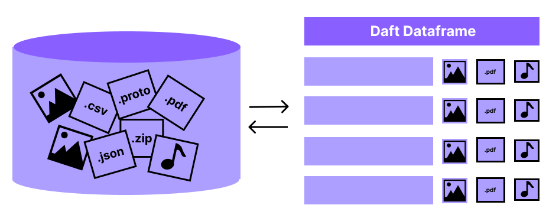

Basic Concepts#
Daft is a distributed data engine. The main abstraction in Daft is the DataFrame, which conceptually can be thought of as a “table” of data with rows and columns.
Daft also exposes a SQL interface which interoperates closely with the DataFrame interface, allowing you to express data transformations and queries on your tables as SQL strings.
{kind=link}
Terminology#
DataFrames#
The DataFrame is the core concept in Daft. Think of it as a table with rows and columns, similar to a spreadsheet or a database table. It’s designed to handle large amounts of data efficiently.
Daft DataFrames are lazy. This means that calling most methods on a DataFrame will not execute that operation immediately - instead, DataFrames expose explicit methods such as daft.DataFrame.show() and daft.DataFrame.write_parquet()
which will actually trigger computation of the DataFrame.
Expressions#
An Expression is a fundamental concept in Daft that allows you to define computations on DataFrame columns. They are the building blocks for transforming and manipulating data
within your DataFrame and will be your best friend if you are working with Daft primarily using the Python API.
Query Plan#
As mentioned earlier, Daft DataFrames are lazy. Under the hood, each DataFrame in Daft is represented by a plan of operations that describes how to compute that DataFrame.
This plan is called the “query plan” and calling methods on the DataFrame actually adds steps to the query plan!
When your DataFrame is executed, Daft will read this plan, optimize it to make it run faster and then execute it to compute the requested results.
Structured Query Language (SQL)#
SQL is a common query language for expressing queries over tables of data. Daft exposes a SQL API as an alternative (but often also complementary API) to the Python DataFrame and
Expression APIs for building queries.
You can use SQL in Daft via the daft.sql() function, and Daft will also convert many SQL-compatible strings into Expressions via daft.sql_expr() for easy interoperability with DataFrames.
DataFrame#
If you are coming from other DataFrame libraries such as Pandas or Polars, here are some key differences about Daft DataFrames:
Distributed: When running in a distributed cluster, Daft splits your data into smaller “chunks” called Partitions. This allows Daft to process your data in parallel across multiple machines, leveraging more resources to work with large datasets.
Lazy: When you write operations on a DataFrame, Daft doesn’t execute them immediately. Instead, it creates a plan (called a query plan) of what needs to be done. This plan is optimized and only executed when you specifically request the results, which can lead to more efficient computations.
Multimodal: Unlike traditional tables that usually contain simple data types like numbers and text, Daft DataFrames can handle complex data types in its columns. This includes things like images, audio files, or even custom Python objects.
Common data operations that you would perform on DataFrames are:
Filtering rows: Use
df.where(...)to keep only the rows that meet certain conditions.Creating new columns: Use
df.with_column(...)to add a new column based on calculations from existing ones.Joining tables: Use
df.join(other_df, ...)to combine two DataFrames based on common columns.Sorting: Use
df.sort(...)to arrange your data based on values in one or more columns.Grouping and aggregating: Use
df.groupby(...).agg(...)to summarize your data by groups.
Creating a Dataframe#
See also
Reading/Writing Data - a more in-depth guide on various options for reading/writing data to/from Daft DataFrames from in-memory data (Python, Arrow), files (Parquet, CSV, JSON), SQL Databases and Data Catalogs
Let’s create our first Dataframe from a Python dictionary of columns.
import daft
df = daft.from_pydict({
"A": [1, 2, 3, 4],
"B": [1.5, 2.5, 3.5, 4.5],
"C": [True, True, False, False],
"D": [None, None, None, None],
})
Examine your Dataframe by printing it:
df
╭───────┬─────────┬─────────┬──────╮
│ A ┆ B ┆ C ┆ D │
│ --- ┆ --- ┆ --- ┆ --- │
│ Int64 ┆ Float64 ┆ Boolean ┆ Null │
╞═══════╪═════════╪═════════╪══════╡
│ 1 ┆ 1.5 ┆ true ┆ None │
├╌╌╌╌╌╌╌┼╌╌╌╌╌╌╌╌╌┼╌╌╌╌╌╌╌╌╌┼╌╌╌╌╌╌┤
│ 2 ┆ 2.5 ┆ true ┆ None │
├╌╌╌╌╌╌╌┼╌╌╌╌╌╌╌╌╌┼╌╌╌╌╌╌╌╌╌┼╌╌╌╌╌╌┤
│ 3 ┆ 3.5 ┆ false ┆ None │
├╌╌╌╌╌╌╌┼╌╌╌╌╌╌╌╌╌┼╌╌╌╌╌╌╌╌╌┼╌╌╌╌╌╌┤
│ 4 ┆ 4.5 ┆ false ┆ None │
╰───────┴─────────┴─────────┴──────╯
(Showing first 4 of 4 rows)
Congratulations - you just created your first DataFrame! It has 4 columns, “A”, “B”, “C”, and “D”. Let’s try to select only the “A”, “B”, and “C” columns:
df = df.select("A", "B", "C")
df
df = daft.sql("SELECT A, B, C FROM df")
df
╭───────┬─────────┬─────────╮
│ A ┆ B ┆ C │
│ --- ┆ --- ┆ --- │
│ Int64 ┆ Float64 ┆ Boolean │
╰───────┴─────────┴─────────╯
(No data to display: Dataframe not materialized)
But wait - why is it printing the message (No data to display: Dataframe not materialized) and where are the rows of each column?
Executing our DataFrame and Viewing Data#
The reason that our DataFrame currently does not display its rows is that Daft DataFrames are lazy. This just means that Daft DataFrames will defer all its work until you tell it to execute.
In this case, Daft is just deferring the work required to read the data and select columns, however in practice this laziness can be very useful for helping Daft optimize your queries before execution!
Note
When you call methods on a Daft Dataframe, it defers the work by adding to an internal “plan”. You can examine the current plan of a DataFrame by calling df.explain()!
Passing the show_all=True argument will show you the plan after Daft applies its query optimizations and the physical (lower-level) plan.
== Unoptimized Logical Plan ==
* Project: col(A), col(B), col(C)
|
* Source:
| Number of partitions = 1
| Output schema = A#Int64, B#Float64, C#Boolean, D#Null
== Optimized Logical Plan ==
* Project: col(A), col(B), col(C)
|
* Source:
| Number of partitions = 1
| Output schema = A#Int64, B#Float64, C#Boolean, D#Null
== Physical Plan ==
* Project: col(A), col(B), col(C)
| Clustering spec = { Num partitions = 1 }
|
* InMemoryScan:
| Schema = A#Int64, B#Float64, C#Boolean, D#Null,
| Size bytes = 65,
| Clustering spec = { Num partitions = 1 }
We can tell Daft to execute our DataFrame and store the results in-memory using df.collect():
df.collect()
df
╭───────┬─────────┬─────────┬──────╮
│ A ┆ B ┆ C ┆ D │
│ --- ┆ --- ┆ --- ┆ --- │
│ Int64 ┆ Float64 ┆ Boolean ┆ Null │
╞═══════╪═════════╪═════════╪══════╡
│ 1 ┆ 1.5 ┆ true ┆ None │
├╌╌╌╌╌╌╌┼╌╌╌╌╌╌╌╌╌┼╌╌╌╌╌╌╌╌╌┼╌╌╌╌╌╌┤
│ 2 ┆ 2.5 ┆ true ┆ None │
├╌╌╌╌╌╌╌┼╌╌╌╌╌╌╌╌╌┼╌╌╌╌╌╌╌╌╌┼╌╌╌╌╌╌┤
│ 3 ┆ 3.5 ┆ false ┆ None │
├╌╌╌╌╌╌╌┼╌╌╌╌╌╌╌╌╌┼╌╌╌╌╌╌╌╌╌┼╌╌╌╌╌╌┤
│ 4 ┆ 4.5 ┆ false ┆ None │
╰───────┴─────────┴─────────┴──────╯
(Showing first 4 of 4 rows)
Now your DataFrame object df is materialized - Daft has executed all the steps required to compute the results, and has cached the results in memory so that it can display this preview.
Any subsequent operations on df will avoid recomputations, and just use this materialized result!
When should I materialize my DataFrame?#
If you “eagerly” call df.collect() immediately on every DataFrame, you may run into issues:
If data is too large at any step, materializing all of it may cause memory issues
Optimizations are not possible since we cannot “predict future operations”
However, data science is all about experimentation and trying different things on the same data. This means that materialization is crucial when working interactively with DataFrames, since it speeds up all subsequent experimentation on that DataFrame.
We suggest materializing DataFrames using df.collect() when they contain expensive operations (e.g. sorts or expensive function calls) and have to be called multiple times by downstream code:
df = df.sort("A") # expensive sort
df.collect() # materialize the DataFrame
# All subsequent work on df avoids recomputing previous steps
df.sum("B").show()
df.mean("B").show()
df.with_column("try_this", df["A"] + 1).show(5)
df = daft.sql("SELECT * FROM df ORDER BY A")
df.collect()
# All subsequent work on df avoids recomputing previous steps
daft.sql("SELECT sum(B) FROM df").show()
daft.sql("SELECT mean(B) FROM df").show()
daft.sql("SELECT *, (A + 1) AS try_this FROM df").show(5)
╭─────────╮
│ B │
│ --- │
│ Float64 │
╞═════════╡
│ 12 │
╰─────────╯
(Showing first 1 of 1 rows)
╭─────────╮
│ B │
│ --- │
│ Float64 │
╞═════════╡
│ 3 │
╰─────────╯
(Showing first 1 of 1 rows)
╭───────┬─────────┬─────────┬──────────╮
│ A ┆ B ┆ C ┆ try_this │
│ --- ┆ --- ┆ --- ┆ --- │
│ Int64 ┆ Float64 ┆ Boolean ┆ Int64 │
╞═══════╪═════════╪═════════╪══════════╡
│ 1 ┆ 1.5 ┆ true ┆ 2 │
├╌╌╌╌╌╌╌┼╌╌╌╌╌╌╌╌╌┼╌╌╌╌╌╌╌╌╌┼╌╌╌╌╌╌╌╌╌╌┤
│ 2 ┆ 2.5 ┆ true ┆ 3 │
├╌╌╌╌╌╌╌┼╌╌╌╌╌╌╌╌╌┼╌╌╌╌╌╌╌╌╌┼╌╌╌╌╌╌╌╌╌╌┤
│ 3 ┆ 3.5 ┆ false ┆ 4 │
├╌╌╌╌╌╌╌┼╌╌╌╌╌╌╌╌╌┼╌╌╌╌╌╌╌╌╌┼╌╌╌╌╌╌╌╌╌╌┤
│ 4 ┆ 4.5 ┆ false ┆ 5 │
╰───────┴─────────┴─────────┴──────────╯
(Showing first 4 of 4 rows)
In many other cases however, there are better options than materializing your entire DataFrame with df.collect():
Peeking with df.show(N): If you only want to “peek” at the first few rows of your data for visualization purposes, you can use
df.show(N), which processes and shows only the firstNrows.Writing to disk: The
df.write_*methods will process and write your data to disk per-partition, avoiding materializing it all in memory at once.Pruning data: You can materialize your DataFrame after performing a
df.limit(),df.where()ordf.select()operation which processes your data or prune it down to a smaller size.
Schemas and Types#
Notice also that when we printed our DataFrame, Daft displayed its schema. Each column of your DataFrame has a name and a type, and all data in that column will adhere to that type!
Daft can display your DataFrame’s schema without materializing it. Under the hood, it performs intelligent sampling of your data to determine the appropriate schema, and if you make any modifications to your DataFrame it can infer the resulting types based on the operation.
Note
Under the hood, Daft represents data in the Apache Arrow format, which allows it to efficiently represent and work on data using high-performance kernels which are written in Rust.
Running Computation with Expressions#
To run computations on data in our DataFrame, we use Expressions.
The following statement will df.show() a DataFrame that has only one column - the column A from our original DataFrame but with every row incremented by 1.
df.select(df["A"] + 1).show()
daft.sql("SELECT A + 1 FROM df").show()
╭───────╮
│ A │
│ --- │
│ Int64 │
╞═══════╡
│ 2 │
├╌╌╌╌╌╌╌┤
│ 3 │
├╌╌╌╌╌╌╌┤
│ 4 │
├╌╌╌╌╌╌╌┤
│ 5 │
╰───────╯
(Showing first 4 of 4 rows)
Note
A common pattern is to create a new columns using DataFrame.with_column:
# Creates a new column named "foo" which takes on values
# of column "A" incremented by 1
df = df.with_column("foo", df["A"] + 1)
df.show()
# Creates a new column named "foo" which takes on values
# of column "A" incremented by 1
df = daft.sql("SELECT *, A + 1 AS foo FROM df")
df.show()
╭───────┬─────────┬─────────┬───────╮
│ A ┆ B ┆ C ┆ foo │
│ --- ┆ --- ┆ --- ┆ --- │
│ Int64 ┆ Float64 ┆ Boolean ┆ Int64 │
╞═══════╪═════════╪═════════╪═══════╡
│ 1 ┆ 1.5 ┆ true ┆ 2 │
├╌╌╌╌╌╌╌┼╌╌╌╌╌╌╌╌╌┼╌╌╌╌╌╌╌╌╌┼╌╌╌╌╌╌╌┤
│ 2 ┆ 2.5 ┆ true ┆ 3 │
├╌╌╌╌╌╌╌┼╌╌╌╌╌╌╌╌╌┼╌╌╌╌╌╌╌╌╌┼╌╌╌╌╌╌╌┤
│ 3 ┆ 3.5 ┆ false ┆ 4 │
├╌╌╌╌╌╌╌┼╌╌╌╌╌╌╌╌╌┼╌╌╌╌╌╌╌╌╌┼╌╌╌╌╌╌╌┤
│ 4 ┆ 4.5 ┆ false ┆ 5 │
╰───────┴─────────┴─────────┴───────╯
(Showing first 4 of 4 rows)
Congratulations, you have just written your first Expression: df["A"] + 1!
Expressions are a powerful way of describing computation on columns. For more details, check out the next section on Expressions